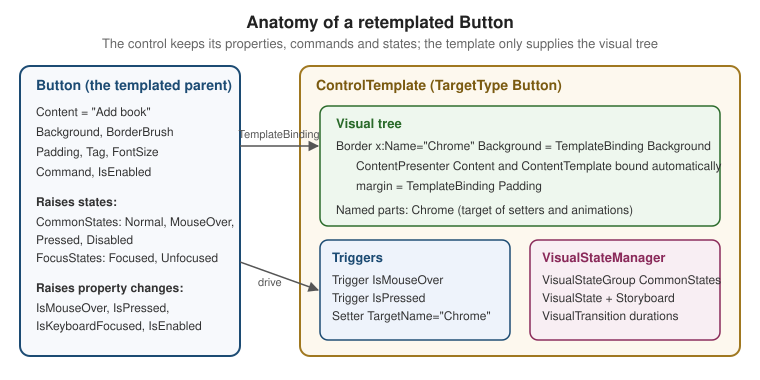

Styles, Templates & Triggers
|
This content was generated with the assistance of AI and should be verified against the official documentation before being relied on in production. |
Every WPF control is split in two. The control class (Button, ListBoxItem, TextBox) owns behaviour: it
raises Click, tracks IsSelected, runs commands and reports its state. The appearance lives somewhere else, in
a Style that sets its properties and in a ControlTemplate that builds its visual tree. Because the two are
connected only through dependency properties and a few named parts, you can restyle or completely rebuild a control
in XAML without subclassing it. This page covers the four tools that do that: styles, control templates, triggers
and the visual state manager, and applies them to a Button and a ListBoxItem in Bookshelf Desktop.
The page was written against these versions, current in October 2026:
-
.NET 10 LTS, latest patch 10.0.13, with C# 14. .NET 11 is at release candidate 2 (general availability is expected 10 to 13 November 2026). The styling, templating, trigger and visual-state model described here is the same one WPF has had since .NET Framework 4.0; none of the .NET 8, 9 or 10 release notes changes it. What did change is the set of built-in themes (the Fluent theme from .NET 9), covered on the Themes & Fluent Design page.
-
CommunityToolkit.Mvvm 8.4.2 for the view models used as data.
-
Windows App SDK 2.5.1 (stable channel) for the WinUI 3 comparison.
-
Visual Studio 2026 18.11.1, whose XAML Live Preview and Live Visual Tree help to inspect templates at run time (see the Development Environment & Tooling page).
The Four Tools and When to Use Each
| Tool | What it changes | Reach for it when |
|---|---|---|
|
Property values ( |
You want the same fonts, margins, colours or behaviours on many elements, or a state-dependent property change |
|
The whole visual tree of a control |
Setting properties cannot give the look you need (round button, card-shaped list item, custom check mark) |
Triggers |
Property values or animations when a property, data value or event changes |
A look depends on a property of the control ( |
|
Animated transitions between named states a control reports |
You want smooth transitions, or the same state names to work across several templates |
DataTemplate is the fifth related object: it describes how a data object looks, not how a control looks. A
ControlTemplate defines how a control is structured; a DataTemplate defines the content of a control. The
Converters, Collection Views & Data Templates page covers DataTemplate in full; this page only meets it where a
ListBoxItem template and an item template cooperate.
The official overview, Styles and templates, describes styles, ControlTemplate, TemplateBinding,
DataTemplate, triggers and visual states in one page. The how-to Create a template for a control walks through a
round Button with a property trigger and then the same effect as a visual state. Microsoft Learn does not
document a catalogue of the part names and state names of each built-in control in one place; for those you read the
"Remarks" of the control’s API reference page or inspect the default template (see
Reading the Default Template).
Styles
A Style is a reusable set of property values. It can be applied to any FrameworkElement or
FrameworkContentElement: a Window, a Button, a TextBlock or a Paragraph. Its main members:
| Member | Meaning |
|---|---|
|
The type the style applies to. Required when setters name properties without a type prefix, and required for an implicit style |
|
The content property of |
|
|
|
Another style to inherit from. The derived style’s setters override same-property setters of the base, and the triggers are combined |
|
A resource dictionary scoped to the style, available to elements the style creates through a template |
|
Becomes |
A style that has an x:Key is applied explicitly with Style="{StaticResource Key}". A style that has a
TargetType and no x:Key is an implicit style: the compiler gives it the type as its key, and every element of
exactly that type below the dictionary’s scope picks it up automatically. "Exactly that type" matters: an implicit
style for Button is not applied to a class derived from Button, and a style for Control is not applied to
anything unless a Style with that key is looked up.
A Style Library for Bookshelf Desktop
The following dictionary is merged into App.xaml (see the Resources & Resource Dictionaries page for merging). It
has one implicit style, one keyed style that extends it, and one style that combines a setter, a trigger and a
BasedOn chain.
<!-- Themes/BookshelfStyles.xaml -->
<ResourceDictionary xmlns="http://schemas.microsoft.com/winfx/2006/xaml/presentation"
xmlns:x="http://schemas.microsoft.com/winfx/2006/xaml">
<SolidColorBrush x:Key="AccentBrush" Color="#2B6CB0" />
<SolidColorBrush x:Key="AccentHoverBrush" Color="#2C5282" />
<SolidColorBrush x:Key="MutedTextBrush" Color="#5A6472" />
<!-- Implicit style: every TextBlock below this dictionary's scope gets it -->
<Style TargetType="TextBlock">
<Setter Property="FontSize" Value="14" />
<Setter Property="TextTrimming" Value="CharacterEllipsis" />
</Style>
<!-- Keyed style that extends the implicit one -->
<Style x:Key="PageTitleText" TargetType="TextBlock"
BasedOn="{StaticResource {x:Type TextBlock}}">
<Setter Property="FontSize" Value="24" />
<Setter Property="FontWeight" Value="SemiBold" />
<Setter Property="Margin" Value="0,0,0,12" />
</Style>
<Style x:Key="MutedText" TargetType="TextBlock"
BasedOn="{StaticResource {x:Type TextBlock}}">
<Setter Property="Foreground" Value="{StaticResource MutedTextBrush}" />
</Style>
<!-- Implicit Button style with a trigger -->
<Style TargetType="Button">
<Setter Property="Padding" Value="14,6" />
<Setter Property="MinWidth" Value="88" />
<Style.Triggers>
<Trigger Property="IsDefault" Value="True">
<Setter Property="FontWeight" Value="SemiBold" />
</Trigger>
</Style.Triggers>
</Style>
<!-- Keyed style based on the implicit Button style -->
<Style x:Key="PrimaryButton" TargetType="Button"
BasedOn="{StaticResource {x:Type Button}}">
<Setter Property="Foreground" Value="White" />
<Setter Property="Background" Value="{StaticResource AccentBrush}" />
</Style>
</ResourceDictionary>Source: Styles and templates
Points worth noting in that dictionary:
-
BasedOn="{StaticResource {x:Type TextBlock}}"is how a keyed style extends the implicit style. WithoutBasedOn, a keyed style replaces the implicit one for the elements that use it; it does not add to it. -
Setting a property directly on an element (
FontSize="20") beats the style, because a local value has higher precedence than any style value. The Dependency Properties & Attached Properties page lists the full order. -
A style can be set only once per element; to combine two styles, make one
BasedOnthe other.
Applying Styles
<StackPanel Margin="16">
<TextBlock Style="{StaticResource PageTitleText}" Text="My bookshelf" />
<TextBlock Style="{StaticResource MutedText}" Text="3 books, 1 favourite" />
<TextBlock Text="Uses the implicit TextBlock style" />
<StackPanel Orientation="Horizontal" Margin="0,12,0,0">
<Button Content="Cancel" IsCancel="True" />
<Button Content="Save" IsDefault="True" Style="{StaticResource PrimaryButton}" Margin="8,0,0,0" />
</StackPanel>
</StackPanel>Source: Create a style for a control
Styles From Code and Event Setters
Styles are ordinary objects, so they can be built in code. A style is sealed on first use; build it completely before assigning it.
using System.Windows;
using System.Windows.Controls;
using System.Windows.Media;
namespace Bookshelf.Desktop;
public static class StyleFactory
{
public static Style CreateFavouriteBadgeStyle()
{
var style = new Style(typeof(TextBlock), (Style)Application.Current.FindResource(typeof(TextBlock)));
style.Setters.Add(new Setter(TextBlock.ForegroundProperty, Brushes.Goldenrod));
style.Setters.Add(new Setter(TextBlock.FontWeightProperty, FontWeights.Bold));
var trigger = new Trigger { Property = UIElement.IsMouseOverProperty, Value = true };
trigger.Setters.Add(new Setter(TextBlock.TextDecorationsProperty, TextDecorations.Underline));
style.Triggers.Add(trigger);
return style; // sealed the first time an element uses it
}
}Source: Style class
An EventSetter attaches a handler to every element the style applies to, which is useful for routed events such as
MouseDoubleClick on a ListBoxItem when there is no command available:
<Style TargetType="ListBoxItem">
<EventSetter Event="MouseDoubleClick" Handler="OnBookDoubleClick" />
</Style>Source: Style class
Prefer binding InputBindings or a command to an event setter in MVVM code (see the Commands page): an
EventSetter needs a code-behind handler in the file that declares the style.
Triggers
A trigger sets properties or starts actions when a condition becomes true, and undoes them when it becomes false.
Style, ControlTemplate and DataTemplate each have a Triggers collection (FrameworkElement.Triggers exists
too, but accepts only EventTrigger).
| Trigger | Condition | Notes |
|---|---|---|
|
One dependency property equals |
Properties |
|
All |
Logical AND only; for OR write two triggers |
|
A binding evaluates to |
|
|
All |
The data-bound version of |
|
A routed event is raised |
Starts actions ( |
Trigger and MultiTrigger
Property triggers observe a dependency property of the element. A plain CLR property will not work, because there
is no change notification the trigger can listen to. When the condition stops holding, WPF restores the value the
property had before; you never write the "undo" setter. That is why the example below has no setter that puts
Opacity back to 0.75 when the pointer leaves.
<Style x:Key="BookRowStyle" TargetType="ListBoxItem">
<Setter Property="Opacity" Value="0.75" />
<Style.Triggers>
<Trigger Property="IsMouseOver" Value="True">
<Setter Property="Opacity" Value="1.0" />
</Trigger>
<!-- AND of two conditions: selected AND the list has lost focus -->
<MultiTrigger>
<MultiTrigger.Conditions>
<Condition Property="IsSelected" Value="True" />
<Condition Property="Selector.IsSelectionActive" Value="False" />
</MultiTrigger.Conditions>
<Setter Property="Opacity" Value="0.9" />
</MultiTrigger>
</Style.Triggers>
</Style>Source: Styles and templates
Selector.IsSelectionActive is an attached property that Selector sets on its items to say whether the selector
(or something inside it) has keyboard focus. The default ListBoxItem look uses it to show the selection in grey
when the list is not focused.
DataTrigger and MultiDataTrigger
A DataTrigger makes the look depend on data instead of on a control property. Its Binding is evaluated against
the element’s DataContext by default, so inside an item template or an item container style it sees the item.
<Style x:Key="BookTitleText" TargetType="TextBlock"
BasedOn="{StaticResource {x:Type TextBlock}}">
<Style.Triggers>
<!-- single condition on a view-model property -->
<DataTrigger Binding="{Binding IsFavorite}" Value="True">
<Setter Property="FontWeight" Value="Bold" />
<Setter Property="Foreground" Value="Goldenrod" />
</DataTrigger>
<!-- two data conditions -->
<MultiDataTrigger>
<MultiDataTrigger.Conditions>
<Condition Binding="{Binding IsFavorite}" Value="True" />
<Condition Binding="{Binding Author}" Value="Cervantes" />
</MultiDataTrigger.Conditions>
<Setter Property="TextDecorations" Value="Underline" />
</MultiDataTrigger>
</Style.Triggers>
</Style>Source: DataTrigger class
The binding behind a DataTrigger follows all the rules of the Data Binding page. In particular, a trigger on a
property of the view model reacts only if that property raises PropertyChanged; with the MVVM Toolkit’s
[ObservableProperty] that is automatic. To compare against null, use Value="{x:Null}".
EventTrigger and Animations
EventTrigger starts actions when a routed event fires. In WPF the actions are animation-related: BeginStoryboard,
PauseStoryboard, StopStoryboard and so on. It cannot set a property.
<Style x:Key="AnimatedBookRow" TargetType="ListBoxItem">
<Setter Property="MaxHeight" Value="64" />
<Style.Triggers>
<EventTrigger RoutedEvent="Mouse.MouseEnter">
<BeginStoryboard>
<Storyboard>
<DoubleAnimation Storyboard.TargetProperty="MaxHeight" To="80" Duration="0:0:0.2" />
</Storyboard>
</BeginStoryboard>
</EventTrigger>
<EventTrigger RoutedEvent="Mouse.MouseLeave">
<BeginStoryboard>
<Storyboard>
<DoubleAnimation Storyboard.TargetProperty="MaxHeight" Duration="0:0:1" />
</Storyboard>
</BeginStoryboard>
</EventTrigger>
</Style.Triggers>
</Style>Source: Styles and templates
Property, data and multi triggers can also run animations with EnterActions and ExitActions. The
EnterActions run when the condition becomes true and ExitActions when it becomes false, which is the idiomatic
way to animate both directions of a property change. The Graphics, Animation & Multimedia page covers storyboards.
Where Triggers Can and Cannot Reach
-
A trigger in a
Stylehas no name table, soSourceName(on a trigger) andTargetName(on a setter) are not allowed there; they refer to named elements inside a template. In aStylea trigger always affects the styled element itself. -
A trigger in a
ControlTemplateorDataTemplatemay useTargetNameon aSetterto change a named element of the template, andSourceNameto watch one. -
Triggers live in the template or style, so they do not appear in the control’s own properties. Inspect them with the Live Property Explorer, which shows which style or trigger a value came from.
Control Templates
A ControlTemplate replaces the visual tree of a control. Every Control has a Template property. The default
value comes from the theme (the control’s default style, found through DefaultStyleKey), and you replace it
either directly (Template="{StaticResource RoundButton}") or inside a Style through a Setter on Template.
Replacing is all-or-nothing: the overview states that there is no way to replace only part of a control’s visual
tree, so a new template must supply everything the control needs to look and behave right.
| Member | Meaning |
|---|---|
|
The control type the template is for; it lets |
|
The root |
|
Triggers that can use |
|
Resources scoped to the template |
TemplateBinding
TemplateBinding connects a property of an element inside the template to a property of the control being
templated, so that the control’s public properties act as parameters of the template. It is documented as an
optimized form of {Binding RelativeSource={RelativeSource TemplatedParent}}.
| Aspect | TemplateBinding |
Binding with TemplatedParent |
|---|---|---|
Direction |
One-way, from the control to the template element |
Any mode, including |
Cost |
Lighter; evaluated at template-application time |
Full binding engine |
Converter |
|
All binding features |
Source |
A dependency property of the templated parent |
Any path from the templated parent |
Use TemplateBinding for plain pass-through of Background, Padding, BorderBrush and similar properties. Switch
to {Binding Path=..., RelativeSource={RelativeSource TemplatedParent}} when you need two-way flow (for example a
TextBox inside a template writing back to the control’s Text) or a converter chain.
ContentPresenter and ItemsPresenter
A template for a content control marks where the content goes with a ContentPresenter; one for an items control
marks where the items go with an ItemsPresenter (which hosts the ItemsPanel). Both bind automatically:
-
A
ContentPresenterplaced in the template of aContentControlbinds to the control’sContentandContentTemplatewithout any explicit binding. If the content is a string, the presenter creates aTextBlock; if it is a data object, it looks for aDataTemplateby data type. This is what makesButtonaccept any content. -
An
ItemsPresenterin the template of anItemsControlbinds to the control’sItemsandItemTemplate. -
A
ContentPresenteris not limited to theContentproperty: setContentSource="Header"in aHeaderedContentControlorExpandertemplate to presentHeader,HeaderTemplateand friends instead. -
RecognizesAccessKey="True"makes_in a string content an access key, as the standardButtondoes. Without it the underscore is displayed literally.
Named Parts and the PART_ Convention
Some controls need to find a specific element in their template to work. A Slider needs its Track, a
ComboBox needs its pop-up and, when editable, its text box, a TextBox needs the host of its text. Such elements
are called parts, are found by name, and by convention are named with the prefix PART_
(PART_Popup, PART_EditableTextBox, PART_ContentHost, PART_Track). The control’s code looks them up with
GetTemplateChild("PART_Track") in OnApplyTemplate, and declares them with TemplatePartAttribute so that tools
and template authors know about them.
| Concept | Meaning |
|---|---|
|
Class attribute with |
|
Class attribute with |
Missing part |
Most controls tolerate a missing part and lose the feature that needed it; some throw. Read the control’s reference page |
Naming rule |
Names must be unique within the template’s namescope (see the Markup Extensions & Namescopes page) |
Retemplating a Button or a ListBoxItem does not require any parts; both work with any template that
presents their content. Retemplating an editable ComboBox, a ScrollBar or a Slider does, and the reliable way
to do it is to copy the default template and change what you need (below).
Reading the Default Template
Because a template replaces the default entirely, the easiest start is a copy of the default one. In Visual
Studio, right-click a control in the XAML designer and choose Edit Template > Create a Copy; the designer writes a
Style that sets Template with the default tree, triggers and brushes. The overview itself recommends this as a way
to learn how templates work. At run time you can also load the template as XAML:
using System.IO;
using System.Windows.Controls;
using System.Windows.Markup;
namespace Bookshelf.Desktop.Diagnostics;
public static class TemplateDumper
{
/// <summary>Returns the XAML of the control's current template, for inspection only.</summary>
public static string Dump(Control control)
{
if (control.Template is null)
{
return string.Empty;
}
return XamlWriter.Save(control.Template);
}
}Source: XamlWriter.Save method
XamlWriter.Save is documented to have limitations with some objects, including some template output and bindings; treat
its result as a reading aid, not as production XAML. The Visual Studio designer copy, or the theme XAML files shipped
with Visual Studio, are more reliable.

Retemplating a Button
The goal: a Bookshelf Desktop button with a rounded Border, a hover and pressed look, a focus outline and a
disabled state, driven by the button’s own Background, Padding and Foreground. The version below uses triggers.
<Style x:Key="RoundedButton" TargetType="Button">
<Setter Property="Background" Value="#2B6CB0" />
<Setter Property="Foreground" Value="White" />
<Setter Property="Padding" Value="16,8" />
<Setter Property="BorderThickness" Value="0" />
<Setter Property="Cursor" Value="Hand" />
<Setter Property="FocusVisualStyle" Value="{x:Null}" />
<Setter Property="Template">
<Setter.Value>
<ControlTemplate TargetType="Button">
<Border x:Name="Chrome"
Background="{TemplateBinding Background}"
BorderBrush="{TemplateBinding BorderBrush}"
BorderThickness="{TemplateBinding BorderThickness}"
CornerRadius="8"
SnapsToDevicePixels="True">
<ContentPresenter Margin="{TemplateBinding Padding}"
HorizontalAlignment="{TemplateBinding HorizontalContentAlignment}"
VerticalAlignment="{TemplateBinding VerticalContentAlignment}"
RecognizesAccessKey="True"
TextElement.Foreground="{TemplateBinding Foreground}" />
</Border>
<ControlTemplate.Triggers>
<Trigger Property="IsMouseOver" Value="True">
<Setter TargetName="Chrome" Property="Background" Value="#2C5282" />
</Trigger>
<Trigger Property="IsPressed" Value="True">
<Setter TargetName="Chrome" Property="Background" Value="#1A365D" />
</Trigger>
<Trigger Property="IsKeyboardFocused" Value="True">
<Setter TargetName="Chrome" Property="BorderBrush" Value="#90CDF4" />
<Setter TargetName="Chrome" Property="BorderThickness" Value="2" />
</Trigger>
<Trigger Property="IsEnabled" Value="False">
<Setter TargetName="Chrome" Property="Opacity" Value="0.45" />
</Trigger>
</ControlTemplate.Triggers>
</ControlTemplate>
</Setter.Value>
</Setter>
</Style>Source: Create a template for a control
What each choice does:
-
Chromeis a name only the template and its triggers need.TargetName="Chrome"on a setter makes the trigger change that element rather than the button. -
The triggers are ordered from least to most specific. When two triggers set the same property, the later one in the collection wins, so
IsPressedmust come afterIsMouseOver, andIsEnabledlast. -
Putting the template in a
Stylelets the same style set the properties the template reads (Background,Padding). A user can still overrideBackgroundon one button and theTemplateBindinghonours it. -
FocusVisualStyleset to{x:Null}removes the default dotted focus rectangle, which is replaced here by theIsKeyboardFocusedtrigger. Removing focus feedback without replacing it harms keyboard users, so always keep a visible alternative (the Accessibility & UI Automation page expands on this). -
TextElement.Foregroundon the presenter is howForegroundreaches a text content:ContentPresenterdoes not have aForegroundproperty of its own, but the attached property inherits down to theTextBlockit creates. -
Triggers that use
TemplateBinding-fed properties do not fight with them: a trigger beats the template binding while it is active, and the binding value returns afterwards.
The Same Button With the VisualStateManager
Property triggers switch instantly. The VisualStateManager (VSM) instead animates between named states. Button
reports CommonStates (Normal, MouseOver, Pressed, Disabled) and FocusStates (Focused, Unfocused), as
listed in the overview. The VisualStateGroups collection is declared on the root element of the template.
<Style x:Key="AnimatedRoundedButton" TargetType="Button">
<Setter Property="Foreground" Value="White" />
<Setter Property="Padding" Value="16,8" />
<Setter Property="FocusVisualStyle" Value="{x:Null}" />
<Setter Property="Template">
<Setter.Value>
<ControlTemplate TargetType="Button">
<Border x:Name="Chrome" CornerRadius="8" Padding="{TemplateBinding Padding}"
BorderThickness="2">
<Border.Background>
<SolidColorBrush x:Name="ChromeBrush" Color="#2B6CB0" />
</Border.Background>
<Border.BorderBrush>
<SolidColorBrush x:Name="FocusBrush" Color="Transparent" />
</Border.BorderBrush>
<VisualStateManager.VisualStateGroups>
<VisualStateGroup x:Name="CommonStates">
<VisualStateGroup.Transitions>
<VisualTransition GeneratedDuration="0:0:0.15" />
<VisualTransition To="Pressed" GeneratedDuration="0:0:0.05" />
</VisualStateGroup.Transitions>
<VisualState x:Name="Normal" />
<VisualState x:Name="MouseOver">
<Storyboard>
<ColorAnimation Storyboard.TargetName="ChromeBrush"
Storyboard.TargetProperty="Color"
To="#2C5282" Duration="0" />
</Storyboard>
</VisualState>
<VisualState x:Name="Pressed">
<Storyboard>
<ColorAnimation Storyboard.TargetName="ChromeBrush"
Storyboard.TargetProperty="Color"
To="#1A365D" Duration="0" />
</Storyboard>
</VisualState>
<VisualState x:Name="Disabled">
<Storyboard>
<DoubleAnimation Storyboard.TargetName="Chrome"
Storyboard.TargetProperty="Opacity"
To="0.45" Duration="0" />
</Storyboard>
</VisualState>
</VisualStateGroup>
<VisualStateGroup x:Name="FocusStates">
<VisualState x:Name="Unfocused" />
<VisualState x:Name="Focused">
<Storyboard>
<ColorAnimation Storyboard.TargetName="FocusBrush"
Storyboard.TargetProperty="Color"
To="#90CDF4" Duration="0" />
</Storyboard>
</VisualState>
</VisualStateGroup>
</VisualStateManager.VisualStateGroups>
<ContentPresenter HorizontalAlignment="Center" VerticalAlignment="Center"
RecognizesAccessKey="True"
TextElement.Foreground="{TemplateBinding Foreground}" />
</Border>
</ControlTemplate>
</Setter.Value>
</Setter>
</Style>Source: Create a template for a control
How the VSM works, in the terms of the official documentation:
-
A control is always in exactly one state of each group, and cannot be in two states of the same group. The control (here
ButtonBase) decides the state; the template only says what each state looks like. -
WPF’s
VisualStateholds aStoryboard; unlike WinUI there are noSetterchildren, so even a one-property change is an animation, typically withDuration="0". Animating a brush needs a named brush that is not frozen, which is why the background brush has anx:Nameand is declared as a property element. -
VisualTransitionobjects, inVisualStateGroup.Transitions, describe how to get from one state to another.GeneratedDurationproduces an automatic blend of the properties both states animate.FromandTonarrow the transition to specific states; the most specific transition wins. -
The official how-to animates
Backgroundby name throughStoryboard.TargetNameand aTargetPropertypath such as(Shape.Fill).(SolidColorBrush.Color), the same pattern as above.
Choose one mechanism per property. If a property trigger and a visual state both set the same property, the result depends on precedence rules that are hard to reason about; use triggers for instant changes the control reports as properties and the VSM for animated state changes.
Retemplating a ListBoxItem
Lists are where retemplating pays off. A ListBox creates one ListBoxItem container per item, and the
container’s template draws the selection chrome around the item’s own DataTemplate content. To change how
selection, hover and focus look, but not what an item displays, retemplate the container with ItemContainerStyle.
To change what is displayed, use ItemTemplate. Both can be combined, and normally are.
The view model behind the list was introduced on the Commands page; this page needs only these members:
using Bookshelf.Core;
using CommunityToolkit.Mvvm.ComponentModel;
namespace Bookshelf.Desktop.ViewModels;
public partial class BookViewModel(Book book) : ObservableObject
{
public Book Model { get; } = book;
public string Title => Model.Title;
public string Author => Model.Author;
[ObservableProperty]
public partial bool IsFavorite { get; set; }
}Source: ObservableProperty attribute
The item-container style:
<Style x:Key="BookCardItem" TargetType="ListBoxItem">
<Setter Property="Margin" Value="0,0,0,8" />
<Setter Property="Padding" Value="12" />
<Setter Property="HorizontalContentAlignment" Value="Stretch" />
<Setter Property="FocusVisualStyle" Value="{x:Null}" />
<Setter Property="Template">
<Setter.Value>
<ControlTemplate TargetType="ListBoxItem">
<Border x:Name="Card"
Background="White"
BorderBrush="#D5DBE3"
BorderThickness="1"
CornerRadius="10"
Padding="{TemplateBinding Padding}"
SnapsToDevicePixels="True">
<Grid>
<Grid.ColumnDefinitions>
<ColumnDefinition Width="*" />
<ColumnDefinition Width="Auto" />
</Grid.ColumnDefinitions>
<ContentPresenter HorizontalAlignment="{TemplateBinding HorizontalContentAlignment}"
VerticalAlignment="{TemplateBinding VerticalContentAlignment}" />
<TextBlock x:Name="FavouriteBadge" Grid.Column="1" Text="★"
FontSize="18" Foreground="Goldenrod"
VerticalAlignment="Center" Visibility="Collapsed" />
</Grid>
</Border>
<ControlTemplate.Triggers>
<!-- hover -->
<Trigger Property="IsMouseOver" Value="True">
<Setter TargetName="Card" Property="BorderBrush" Value="#90CDF4" />
</Trigger>
<!-- selected and the list has focus -->
<MultiTrigger>
<MultiTrigger.Conditions>
<Condition Property="IsSelected" Value="True" />
<Condition Property="Selector.IsSelectionActive" Value="True" />
</MultiTrigger.Conditions>
<Setter TargetName="Card" Property="Background" Value="#EBF4FF" />
<Setter TargetName="Card" Property="BorderBrush" Value="#2B6CB0" />
</MultiTrigger>
<!-- selected but the list is not focused -->
<MultiTrigger>
<MultiTrigger.Conditions>
<Condition Property="IsSelected" Value="True" />
<Condition Property="Selector.IsSelectionActive" Value="False" />
</MultiTrigger.Conditions>
<Setter TargetName="Card" Property="Background" Value="#F1F3F6" />
<Setter TargetName="Card" Property="BorderBrush" Value="#A0AEC0" />
</MultiTrigger>
<!-- data-driven: IsFavorite lives on the BookViewModel, i.e. the container's DataContext -->
<DataTrigger Binding="{Binding IsFavorite}" Value="True">
<Setter TargetName="FavouriteBadge" Property="Visibility" Value="Visible" />
</DataTrigger>
<Trigger Property="IsEnabled" Value="False">
<Setter TargetName="Card" Property="Opacity" Value="0.5" />
</Trigger>
</ControlTemplate.Triggers>
</ControlTemplate>
</Setter.Value>
</Setter>
</Style>Source: Data templating overview
Used together with an item template that defines the content:
<ListBox ItemsSource="{Binding Books}"
SelectedItem="{Binding SelectedBook}"
ItemContainerStyle="{StaticResource BookCardItem}"
ScrollViewer.HorizontalScrollBarVisibility="Disabled"
BorderThickness="0"
Background="Transparent">
<ListBox.ItemTemplate>
<DataTemplate>
<StackPanel>
<TextBlock Text="{Binding Title}" FontWeight="SemiBold" />
<TextBlock Text="{Binding Author}" Style="{StaticResource MutedText}" />
</StackPanel>
</DataTemplate>
</ListBox.ItemTemplate>
</ListBox>Source: Data templating overview
Why it is built this way:
-
The
ContentPresenterin the container template shows whatever theItemTemplateproduced. TheItemTemplatedoes not know about selection; the container template does not know about books. That separation is the point. -
A custom template ignores properties it does not read; the example passes
PaddingthroughTemplateBindingso thatItemContainerStylecan still configure it. -
The
DataTriggersits in the container’s template, and its binding resolves against the container’sDataContext, which aListBoxsets to the data item. The same trigger in theDataTemplatewould work too. Put it where the target element lives: here the badge is a container element, so the container template owns it. -
Which of the two selected-state triggers fires depends on
Selector.IsSelectionActive. Without the second one, selecting an item and clicking elsewhere would leave a strong selection colour on a list that no longer has focus. -
Visual states:
ListBoxItemalso reports aSelectionStatesgroup (Unselected,Selected,SelectedInactive) in addition toCommonStatesandFocusStates, so the same card could be written with the VSM. The names are documented on theListBoxItemreference page forTemplateVisualStateattributes; verify them there before relying on them.
Item Container Styles for Other Controls
ItemContainerStyle is the item-level hook of every ItemsControl. The container types differ:
| Items control | Container type to target |
|---|---|
|
|
|
|
|
|
|
|
|
|
|
|
|
|
When items need different styles per item type or value, ItemContainerStyleSelector chooses a style in code, which
the Converters, Collection Views & Data Templates page covers.
Putting the Layers Together: Precedence and Lookup
When a property of a styled and templated element gets its value from several of these sources, the order (highest wins) is, in outline:
-
Animations and coercion (an active storyboard overrides most things while it runs)
-
The local value set on the element in XAML or code
-
Property values set by the templated parent on template elements
-
The implicit style for the type
-
Style triggers
-
Template triggers
-
Style setters
-
The default (theme) style
-
Inheritance from the parent element
-
The property’s default from its metadata
Treat this as a mnemonic and follow the exact list on the Dependency Properties & Attached Properties page and the
official dependency property value precedence page, which also shows how style triggers interleave with template
triggers. Two consequences matter in practice. A local value such as Background="Red" on a button defeats every
style setter and trigger that sets Background on the same element; and an animation temporarily beats a local
value, which is why a Storyboard that finishes with FillBehavior="HoldEnd" can "freeze" a property that later
triggers cannot change.
How WPF finds a style for an element:
| Step | Lookup |
|---|---|
1 |
The element’s own |
2 |
If not set, a resource whose key is the element’s type (an implicit style), searched from the element upward through logical-tree resources, then |
3 |
If none, the theme style for the type from the theme assemblies or from |
4 |
The control’s template: the explicit |
OverridesDefaultStyle="True" stops the lookup at step 3, which is useful when the new style should not inherit
anything from the theme.
Styles and Templates in Code-Behind and MVVM
The XAML above needs no code. A few operations do need code, and each should be kept in the view, never in a view model.
Finding Parts of an Applied Template
using System.Windows;
using System.Windows.Controls;
namespace Bookshelf.Desktop.Views;
public partial class BooksView
{
private void OnBookSelected(object sender, SelectionChangedEventArgs e)
{
if (sender is not ListBox list || list.SelectedItem is null)
{
return;
}
// The container exists only for realised items (virtualization), so check for null.
if (list.ItemContainerGenerator.ContainerFromItem(list.SelectedItem) is not ListBoxItem container)
{
return;
}
// The template must have been applied before names can be resolved.
container.ApplyTemplate();
if (container.Template.FindName("FavouriteBadge", container) is TextBlock badge)
{
// Read-only use: write through the view model, not the badge.
System.Diagnostics.Debug.WriteLine($"Badge visible: {badge.Visibility}");
}
}
}The second argument of FindName is the templated parent; without it the lookup has no instance to search.
Changing UI state from code in this way is a smell in MVVM: expose the state as a view-model property and let a
DataTrigger react, as the badge does.
Driving States From a View Model
States that depend on application state, not on control state, can be driven by VisualStateManager.GoToState
from the view. The usual MVVM-friendly way is a small attached behaviour (see the Dependency Properties & Attached Properties page) that calls GoToState when a bound string changes:
using System.Windows;
namespace Bookshelf.Desktop.Behaviors;
public static class VisualStateBehavior
{
public static readonly DependencyProperty StateProperty =
DependencyProperty.RegisterAttached(
"State", typeof(string), typeof(VisualStateBehavior),
new PropertyMetadata(null, OnStateChanged));
public static string? GetState(DependencyObject d) => (string?)d.GetValue(StateProperty);
public static void SetState(DependencyObject d, string? value) => d.SetValue(StateProperty, value);
private static void OnStateChanged(DependencyObject d, DependencyPropertyChangedEventArgs e)
{
// GoToState works on a control that has a template with VisualStateGroups
if (d is FrameworkElement element && e.NewValue is string state)
{
VisualStateManager.GoToState(element, state, useTransitions: true);
}
}
}GoToState takes a FrameworkElement that is a Control; for states declared on a non-control root use
GoToElementState. Unknown state names return false instead of throwing, so a typo silently does nothing.
Templates and Custom Controls
When you author a control, its default template lives in Themes/Generic.xaml, found through the static
constructor that overrides DefaultStyleKeyProperty, as shown in the Control authoring overview. The control’s
code uses GetTemplateChild for PART_ elements and VisualStateManager.GoToState for states. The User Controls & Custom Controls page covers building such a control; the mechanisms on this page are what its consumers use to
restyle it. A UserControl has no replaceable template, so it cannot be retemplated this way: the overview states
that people using a UserControl cannot customize it with a ControlTemplate.
WPF, WinUI 3 and WinForms Compared
| Concept | WPF | WinUI 3 | Windows Forms |
|---|---|---|---|
Style |
|
|
None; set properties in code or the designer, use user settings or a custom base class |
Template |
|
Same names; default templates in |
No templates; owner-draw ( |
Property triggers |
|
Not available |
Not applicable |
Reaction to state |
Triggers or |
|
Event handlers |
|
|
|
Not applicable |
Template binding |
|
|
Not applicable |
Theme-aware brushes |
|
|
|
WinUI 3 moved control-state behaviour entirely to the VSM and removed triggers, so a WPF template that depends on
Trigger has to be rewritten into visual states when ported. The XAML Dialects: WPF, WinUI & MAUI page lists the
porting differences more broadly.
Pitfalls
-
A template replaces the whole tree. A copy of the default template is the safe baseline; a hand-written one loses focus visuals, disabled states and hit testing (a
Borderwith noBackgroundis not clickable; useTransparent). -
A new
ControlTemplatewithout aContentPresenter. The button then shows no text and no error; the content is simply not presented. -
Styleis sealed on first use. Changing an applied style throwsInvalidOperationException; replace the whole style instead. -
Wrong
TargetType. An implicitStyle TargetType="Control"does not reach buttons, and aStyleforButtondoes not apply to aToggleButtonsubclass. Style each type (usingBasedOnto share setters) or use an explicit key. -
Trigger order. Later triggers win for the same property. Put the rarest state, such as disabled, last.
-
Triggers and
TemplateBindingon one property. A trigger setter on a templated element wins only while the trigger is active; when it is not, remember thatTemplateBindingis a one-way binding, so the value returns to the control’s property, not to what you had in the template. -
Setter TargetNamein aStyle. It is only valid inside a template; the compiler reports an error. -
Setting
Backgroundon a control whose template does not use it. Nothing happens; the template has to read the property withTemplateBinding. This is the usual cause of "my style has no effect". -
Mixing triggers and VSM on one property causes confusing precedence; pick one.
-
Animating a frozen or shared brush. A brush declared as a shared resource is frozen and cannot be animated by name inside a state; declare the brush inside the template, as in the animated button.
-
Scope of implicit styles. An implicit style applies only below the resource dictionary that declares it; keep application-wide styles in the
App.xamlmerged dictionaries. -
Performance. A heavy template is instantiated per item; avoid large trees, effects and
DropShadowEffectin list item templates, and keep virtualization on. The Performance & Diagnostics page expands on this. -
Accessibility. Retemplating does not change the automation peer, so name and role stay correct, but removing focus visuals or relying on colour alone hurts users. Keep contrast and a keyboard focus indicator, and respect high-contrast mode via
SystemColorsbrushes. -
Fluent theme. When a Fluent
ThemeModeis applied, the built-in controls' templates change. A custom template keeps its own look, but a style that only sets properties inherits the new theme’s template.
What Microsoft Learn Does Not Provide
-
A single reference of the parts and states of each built-in control. Read the control’s class page ("Remarks" and the
TemplatePartandTemplateVisualStateattributes) or inspect the default template. -
A WPF-specific guide to the VSM beyond the how-to and overview:
VisualTransition,GoToStateand custom state managers are documented only as API reference. -
Guidance on porting
Trigger-based WPF templates to WinUI visual states; the examples on this page show the concepts, not a mechanical translation.